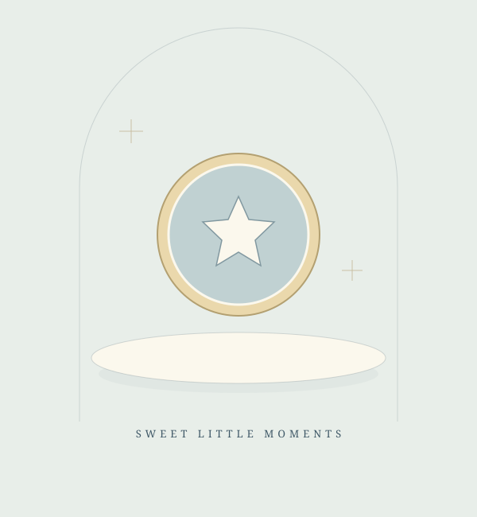

Քաղցր մանրամասներ
Դեկորատիվ նկարազարդում · արտադրանքի լուսանկար չէ աշխատանք։ Ձևավորման հնարավորությունն ու ընթացիկ տեսականին ճշտեք կապ հաստատելիս։
Արժեքը և հասանելիությունըՃշտեք
Քննարկել տարբերակը Անունով, թեմայով և ձեր առիթի տրամադրությամբ։ DaDa Sweets-ի քաղցր աշխատանքները՝ հիշվող փոքրիկ պահերի համար։

Նկարա-DaDa-ի հրապարակումներում ներկայացված են անհատական ու թեմատիկ ձևավորում, անուններով քաղցրավենիք և բլիթներից ծաղիկներ։ Սկսեք ձեր գաղափարից, մանրամասները քննարկեք անմիջապես հեղինակի հետ։
Դիտել աշխատանքներըՀրապարակումներում ներկայացված ձևավորման ուղղություններ։ Պատկերները դեկորատիվ նկարազարդումներ են, ոչ իրական աշխատանքի լուսանկարներ։
Դեկորատիվ նկարազարդում · արտադրանքի լուսանկար չէ աշխատանք։ Ձևավորման հնարավորությունն ու ընթացիկ տեսականին ճշտեք կապ հաստատելիս։
Հրապարակումներում ներկայացված են անուններով և թեմատիկ ձևավորման առաջարկներ։ Քննարկեք ձեր ցանկալի գրությունն ու առիթը։
Հրապարակումներում նշված են բլիթներից ծաղիկներ։ Ձևավորման հնարավորությունն ու պատրաստման ժամկետը պետք է ճշտել։
Պատմեք առիթի մասին։ Նշեք ցանկալի օրը, քանակն ու ձևավորման գաղափարը։
Գրել Facebook-ումՊահպանեք հավանած օրինակը կամ նկարագրեք ձեր գաղափարը։
Հեղինակի հետ քննարկեք ձևավորումը, բաղադրությունը, քանակն ու արժեքը։
Պատրաստման ժամկետն ու ստանալու տարբերակը ճշտեք նախապես։